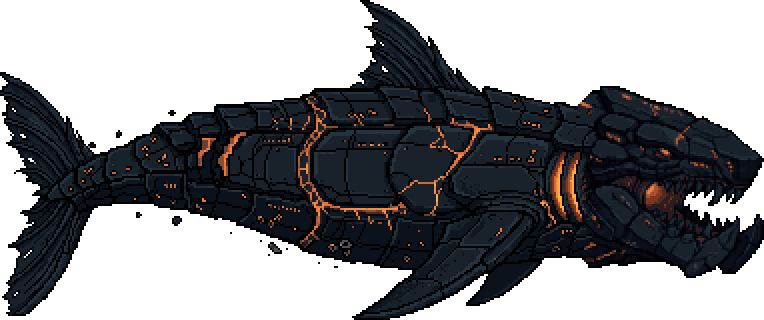
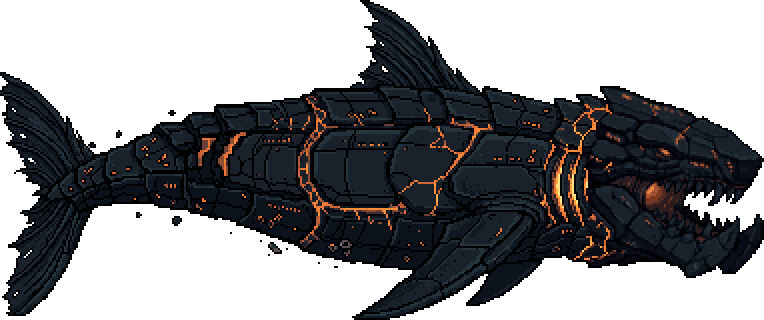
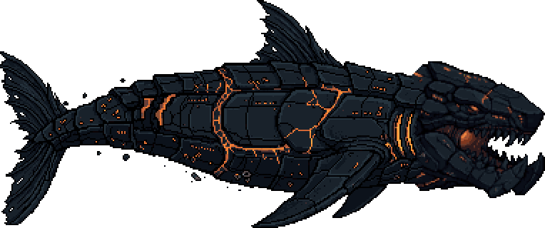
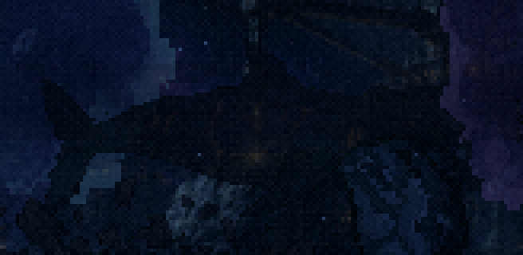
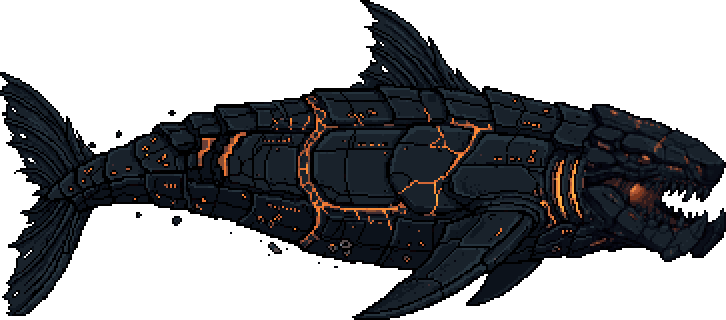
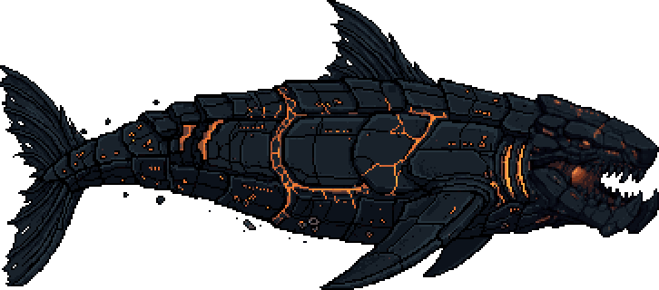
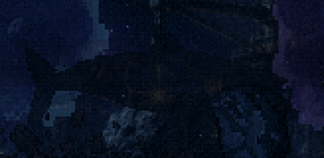
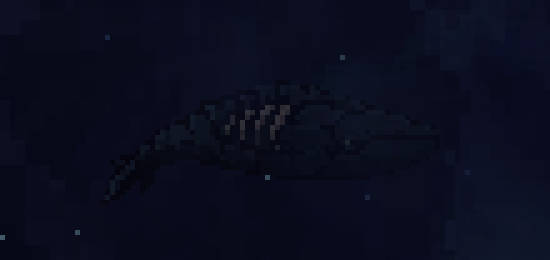
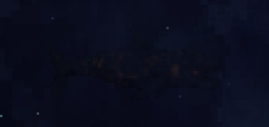

Leviatã novo · a cabeça da mandíbula 31 no corpo do tubarão 31
Bloco D, passo 1 · 18/10/2026 · a sua escolha. O tubarão 32 fica separado como reserva, no fim da página. ← os 8 conceitos
Como foi feita (a partir das duas artes aprovadas, sem desenho novo):
- Costura. A cabeça da mandíbula foi reduzida (só reduzir, nunca aumentar), alinhada pelo eixo do corpo e colada logo depois das guelras do tubarão. O corte é uma linha torta, que passa onde as duas artes mais se parecem, nunca uma reta. O focinho do tubarão sai.
- Emenda. A cabeça é mais alta que o pescoço e deixa um degrau no contorno. O PixelLab repintou só uma faixa estreita em volta da costura, com o resto como contexto. As cores voltaram para a paleta dos dois conceitos, e fora da faixa nenhum pixel mudou.
- Duas escalas de cabeça: 0,85, pesada, de monstro; e 0,7, mais proporcional ao corpo. Cada uma com duas sementes de emenda.
O que eu preciso de você: qual delas segue. Ela vira a base do resto do bloco: a versão enfraquecida do final, o nado do menu e a silhueta.
Cabeça a 0,85 a minha aposta: e41




Cabeça a 0,7 mais proporcional


Reserva · tubarão 32 separado


No menu, hoje
vale para todas A 70px e com o tint do menu, qualquer versão some: sobra só o brilho da lava (compare com o de hoje, que aparece pelas costelas claras). Fica para o passo 3: a versão do menu nasce no tamanho certo, com uma borda de luz fria nas costas ou com o tint revisto.


Ferramentas: scripts/_leviata/_mesclar-cabeca.mjs (a costura) e _emenda-inpaint.mjs (a faixa repintada). Os arquivos estão em mescla/cand/; o tubarão 32 continua intacto em cru/ e copiado como cand/reserva-tubarao-32.png.